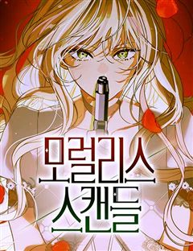
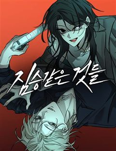
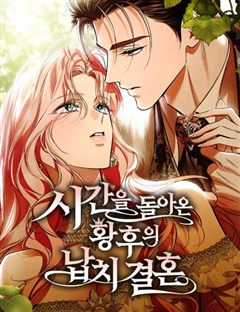
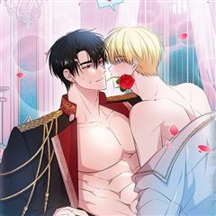
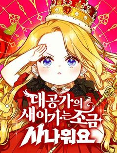
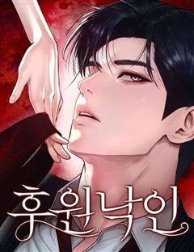

고자극·치명적 로맨스 웹툰 추천 TOP 30
고자극로맨스, 치명적인 같은 태그가 붙은 작품을 모았어요. 네이버웹툰·카카오웹툰·레진코믹스에서 조건에 맞는 작품 45개 중 인기 순으로 30개를 골랐어요. 인기 TOP 3: 세레나, 내가 버린 개에게 물렸을 때, 하렘의 남자들
2026-10-04 기준 · 성인 작품 제외
내 취향으로 더 좁혀서 추천받기 →-
1
 네이버웹툰
네이버웹툰세레나
왕국에서 가장 화려했던 나의 가문이 망했다. 할머니가 선택한 유일한 방법은 계약 결혼뿐. 하필 그 남자와.
고자극로맨스결혼생활악역이주인공왕족/귀족공식미남네이버웹툰에서 보기 → -
2
 카카오웹툰
카카오웹툰내가 버린 개에게 물렸을 때
윈터 공작가에선 개를 기른다. 주인에게 늘 순종하는 검은 개를.. 윈터가의 공녀, 이블린 윈터. 자신만을 따르던 개, 길라스 블랙을 잔인하게 내쫓는다. “저를 사랑하신다고 하시지 않았습니까.” “사랑? 그 말을 믿었어? 버러지 같은 게 주제도 모르고..” ”이 순간을 후회하시게 될 겁…
고자극로맨스자극적인미스터리로판카카오웹툰에서 보기 → -
3
 네이버웹툰
네이버웹툰하렘의 남자들
"내 후궁들부터 들이기로 하였다. 한 다섯 정도." 타리움 제국의 황녀, 라틸. 그녀의 첫사랑 하이신스는 황제가 되기 위해 본국 권력자의 딸과 결혼한다. 충격 받는 라틸. 하지만 그 충격이 가시기도 전에 황태녀가 되고,이복남매의 반란 세력에 맞서 황위를 지켜낸다. 그렇게 여황제가 된…
치명적인순진남자극적인설렘폭발서양네이버웹툰에서 보기 → -
4
 카카오웹툰
카카오웹툰구미호를 잘못 키웠다
어느 날 요괴를 주웠다. 그것도 새끼 구미호를. 녀석의 거취가 고민이 되던 차 만난 동대륙의 신녀, 그녀는 내게 성체가 될 때까지 키운 뒤 고향으로 보내라고 한다. 새끼 여우를 키우라니… 저주받은 인간이 어떻게 어린 생명을 품고 치료한단 말인가. 낯설고 두려웠지만 거부할 수 없었다.…
고자극로맨스로판인외존재카카오웹툰에서 보기 → -
5
 카카오웹툰
카카오웹툰남편의 말대로 정부를 들였다
' “기억하지 루이제? 내 사생활에 참견하는 순간 이 결혼은 끝이야. 그걸 받아들인 건 당신이고.” 결혼 기간 약 3년. 끊이지 않고 바람을 피우는 남편에게 지친 어느 날, 남편이 정부를 들이라고 했다. 그의 말대로 정부를 구해보려고 뒷골목에서 가장 유명한 지골로를 찾아오긴 했는데………
고자극로맨스서스펜스로판카카오웹툰에서 보기 → -
6
 네이버웹툰
네이버웹툰하는 사이
모두의 태양이자 주목받는 존재인 강시화, 그런 시화와 특별한 소꿉 친구 사이로 주변의 질투를 받던 이은서. 어느 날 홀연히 사라졌던 시화가 몇 년이 흘러 돌아왔다. 자꾸 흔들리는 은서의 마음과 도저히 짐작할 수 없는 시화의 행동. 우리는 특별한 사이잖아? 너도 그렇게 생각하지? 하지만…
고자극로맨스리얼로맨스자극적인설렘폭발청춘네이버웹툰에서 보기 → -
7
 네이버웹툰
네이버웹툰가장 썩은 것을 줄게
10년을 사귄 남자친구가 다른 여자와 하룻밤을 보냈다. 그래서 나도 그에게 상처를 주기로 결심했다. 고르고 골라서 가장 나쁘고 치사한 방법으로. 끝나가는 연애 끝에 다시 쓰여지는 이 관계. 단 한 번도 상상 해 본 적도 없는 최악으로 치닫는 상황 속에서, 우리는 다시 사랑 할 수 있을…
고자극로맨스감성적인자극적인현대다정남네이버웹툰에서 보기 → -
8
 네이버웹툰
네이버웹툰남편은 한 명으로 족하다
<모든 사람들이 나를 사랑하면 사는 게 재밌을 줄 알았다> 평범한 회사원이 로맨스 판타지 게임의 매력 수치 999 백작 영애 '크로체타'에 빙의했다. 사람들이 눈만 마주치면 자신에게 반해서 달려드는 환장할 상황. 크로체타는 '남자 주인공'을 공략하여 엔딩을 보고, 이 게임을 탈출하기로…
치명적인자극적인서양게임왕족/귀족네이버웹툰에서 보기 → -
9
 네이버웹툰
네이버웹툰내 남편의 정부에게
나, 레티시아 비올렛은 남편에게 헌신했지만, 모든 것을 잃었다. 그대로 목숨까지 잃을 뻔하던 찰나, 한 남자가 나타난다. 그 남자는 완벽한 복수를 이루도록 도와준다는데... "제 복수를 이루어 주겠다는 말... 꼭 지켜 주세요." 날 죽음까지 몰아넣은 그들에게, 내가 받았던 모든 걸…
고자극로맨스자극적인유혹남능글남폭스남네이버웹툰에서 보기 → -
10
 네이버웹툰
네이버웹툰공작님의 아이만 필요합니다
‘과거로 돌아갈 수 있다면, 그 사람을 사랑하지 않을 텐데.’ 회귀 후, 전남편과의 두 번째 결혼은 오직 아이를 위해서였다. 그렇게 기적처럼 얻은 두 번째 생은 사랑을 갈구하던 전생과 달리 오로지 아이를 다시 만나겠다는 일념하에 그와의 결혼을 선택했다. “딱 일 년만 나와의 결혼을 유…
고자극로맨스눈물샘자극후회물선결혼후연애로판네이버웹툰에서 보기 → -
11
 네이버웹툰
네이버웹툰완벽한 선배의 Hide!
모두에게 다정하고 친절한 엄친아 과탑 태혁 선배. 그러나 그 엄친아의 껍데기 속에는 미친 또라이 지랄남이 숨겨져 있다? 학과 동기들 중 유일하게 그 남자의 비밀을 알고 있는 여자. 그리고 그 여자에게 점점 더 집착하는 또라이 지랄남. 두 선남선녀의 조금 미묘한 대학 생활이 시작된다.
치명적인캠퍼스집착남로맨틱코미디드라마네이버웹툰에서 보기 → -
12
 네이버웹툰
네이버웹툰비공식 CC
캠퍼스 인기남 성우와 비밀 연애 중인 도아. 하지만 성우에겐 숨겨진 비밀이 있다. 그 사실을 아는 은호와 얽히며 도아의 연애는 흔들리기 시작한다. 엇갈린 욕망이 뒤얽힌 캠퍼스 치정 로맨스!
고자극로맨스치명적인캠퍼스캠퍼스로맨스네이버웹툰에서 보기 → -
13
 네이버웹툰
네이버웹툰여동생은 오늘 밤 나를 간택한다
재벌가의 입양딸 아린은 새엄마를 향한 뒤틀린 애정을 품고 있다. 성인이 된 후, 우연한 사고로 자신에게 발칙한 능력이 있음을 깨닫는 아린. 능력을 사용해 새엄마의 관심을 끌어보려 하지만, 새엄마가 아닌 의붓오빠들이 아린을 원하는데... 재벌가 '레어 문' 일가를 뒤흔드는 위험한 입양딸…
고자극로맨스치명적인까칠녀자극적인가족네이버웹툰에서 보기 → -
14

네이버웹툰모럴리스 스캔들
모든 것을 앗아간 남편에게 복수하기 위해 로레나는 죽음을 택했다. 그러나 기적처럼 과거로 돌아온 순간, 결심이 바뀌었다. 이번 생은 다르게. 가족을 지키고, 남편을 짓밟기 위해. 방법은 단 하나, 추문 가득한 이혼. “들개가 필요해요. 사냥개를 잡을 거거든요.” 위험한 동맹, 치명적…
치명적인성장로판리얼로맨스자극적인절망적인네이버웹툰에서 보기 → -
15

네이버웹툰짐승같은 것들
'딴 놈들에게 절대 뺏기지 않아. 저건 내 거야..!' 늑대인간이 공존하는 세상. 늑인 우두머리의 외동딸 한지우의 앞에 <국민아들>, 배우 천유승이 나타난다. 그런데... 대체 뭐하는 놈이지? 왜 평범한 연예인이 늑대의 힘을 강하게 하는 거야?
고자극로맨스혐관유혹남로맨스세계관네이버웹툰에서 보기 → -
16
 네이버웹툰
네이버웹툰제국 최고의 악녀를 사랑하게 되었습니다
여러 여인들을 농락하며 독신 생활을 고수하는 걸로 유명한 공작, 레이븐. 어느날 그런 그 앞에 남자를 싫어하는 것으로 이름높은 제국 최고의 악녀, 에스테렐라 공녀가 나타나 구혼한다. 수많은 염문을 뿌리고 다니는 레이븐과 남자라면 질색하는 악녀의 결혼이 순탄할 리 없지만… 그럼에도 에스…
고자극로맨스순진남서양능력남공식미녀네이버웹툰에서 보기 → -
17
 네이버웹툰
네이버웹툰해일주의보
3년 차 개발자인 이단비의 인생 모토는 단순했다. 우물 밖 세계는 욕심내지 않고 현실에 만족하는 것. 그랬기에 분수에 맞지 않는 짝사랑도 단념할 수 있었는데··· <오늘의 운세- 한 주의 시작, 갑자기 찾아올 해일을 조심하세요!> 불안한 운세와 함께 시작한 어느 아침, 새로 부임한 팀…
치명적인순애남러브코미디자극적인설렘폭발네이버웹툰에서 보기 → -
18카카오웹툰
사내 연애 전선
바람난 남자친구에, 날 찾아와 뻔뻔하게 구는 상대 여자까지. 모든 게 엉망진창이었다. 그런데 똥차 가면 벤츠가 온다던가? 제.대.로 이 남자에게 치여버렸다. 눈부신 얼굴에 조각 같은 몸매, 재력, 능력. 거기다… 나밖에 모르는 완벽한 사람! "안 돼, 정신 차리자! 저 사람은 바로 내…
고자극로맨스설렘폭발오피스카카오웹툰에서 보기 → -
19

네이버웹툰시간을 돌아온 황후의 납치 결혼
“아이라도 낳든가. 씨를 뿌리면 무엇 하나.” 절벽 위의 고고한 꽃으로 불리는 공녀, 엘리아노 로사나. 적국으로 강제로 시집가 고귀한 황후가 되었지만, 가문에게도 남편에게도 버림받아 비참하게 죽는다. 모든 것이 잘못되었다. 다시 눈을 떴을 때는 과거로 돌아와 있었다. 이번 생은 절대…
고자극로맨스외유내강녀선결혼후연애소설원작네이버웹툰에서 보기 → -
20
 네이버웹툰
네이버웹툰불순물 연애
첫사랑의 아픔이 있는 대학생 '여름'. 어느 날, 여름의 첫사랑인 '수영'이 그녀에게 갑작스레 고백을 한다. 약혼까지 깨며 열렬히 구애 하는 수영의 모습에 흔들리는 여름. 고민 끝에 여름은 딱 1년만 갑질 연애를 하면서 수영에게 상처를 주기로 결심한다! 그런데 수영의 고백엔 비밀이 있…
고자극로맨스독자PICK나쁜남자로맨스재회네이버웹툰에서 보기 → -
21네이버웹툰
첫정
대한민국 재벌 3세, 남경 그룹의 차남 권태서. 권태로운 하루 속에서 카페도 하나 없는 성우읍으로 끌려 내려간다. 혹독한 하루하루를 살아내는 안윤아와 만난 후로 태서는 인생에서 한 번도 느껴보지 못한 감정을 느끼게 된다. 그로부터 4년 후, 순해 빠진 여자가 사납게 변하더니 급기야 태…
고자극로맨스치명적인자극적인설렘폭발현대네이버웹툰에서 보기 → -
22
 네이버웹툰
네이버웹툰시간제 부부
다인의 첫사랑이자 옛 연인이었던 강서준은 결혼하지 못하면 죽을 운명이라며 다인에게 100일짜리 계약 결혼을 제안한다. 얼토당토않는 제안에 자존심은 좀 상하지만, 당차게 계약 조건을 내건 다인은 그렇게 서준과 신혼 생활을 시작하게 되는데…!
고자극로맨스사이다설렘폭발첫사랑계략남네이버웹툰에서 보기 → -
23
 네이버웹툰
네이버웹툰남편 도둑
재산을 상속받기 위해 반드시 결혼해야만 하는 클래이시는 나이 차이도 별로 나지 않는 조카 메런의 훼방으로 번번이 연애 할 기회를 놓치다 운명처럼 만난 남자와 진정한 사랑 끝에 결혼에 이르게 된다. 행복한 신혼생활 중 이를 시기한 메런이 시간을 돌려 과거로 돌아오게 되고, 새로 시작된…
고자극로맨스치명적인레드아이스 스튜디오서양가족네이버웹툰에서 보기 → -
24

카카오웹툰남주와 침대에서 뒹굴었다
리샤르는 어느 날 이 세상이 하나의 ‘이야기’라는 말을 듣는다. 이야기 속 자신의 역할은 ‘서브남주’. 서브남주 리샤르는 수십 번의 회귀 동안 단 한 번도 여주인공의 마음을 얻지 못했다. 여주인공은 늘 쓰레기 남주인공과 이어지고, 서브남주의 운명을 타고난 리샤르는 버림받았다. 그녀가…
고자극로맨스개그로맨틱코미디카카오웹툰에서 보기 → -
25
 카카오웹툰
카카오웹툰비비안을 잊어주세요
“나와 결혼해 줘, 비비안.” 그와 함께라면 행복한 미래가 올 거라 믿고 있었다. 하지만, 그가 황제가 되고 난 후 모든 것이 변하기 시작했다. 갑자기 변해버린 그의 태도. 밤마다 공녀와 밀회한다는 이상한 소문. 결국 나는 황궁에 유폐되고, 그가 하라는 대로만 행동하게 되었다. 그러던…
고자극로맨스힐링눈물샘자극로판카카오웹툰에서 보기 → -
26

네이버웹툰대공가의 새아가는 조금 사나워요
무적의 특전사였던 내가 환생하니 이세계의 5살 어린아이?! 심지어 불행한 미래가 예정됐다고? 소녀, 아니 아기 '루디아'로 태어난 나! 예정된 미래를 바꾸고 행복을 쟁취해야만 한다. 특전사 정신으로 무장하고! '안 되면 되게 하라!'
치명적인성장로판설렘폭발능력녀힐링네이버웹툰에서 보기 → -
27
 카카오웹툰
카카오웹툰엄마는 또 처음이라
“이곳에 지장을 찍으시죠, 그린트 영애.” “싫어요!” “피곤하게 만들지 말고 어서.” “싫다니까요. 내가 왜 당신이랑 결혼을 해요?” “그럼 영애가 누구랑 결혼을 하겠습니까?” 숨이 섞일 정도로 가까운 거리에서, 테리우스 허트는 조심스럽게 검지를 들어 판판한 내 배 위로 부드럽게 원…
고자극로맨스설렘폭발로판카카오웹툰에서 보기 → -
28

네이버웹툰후원 낙인
어디서부터 잘못된 걸까. 감히 후원자의 하나뿐인 아들, 구제헌을 마음에 품은 순간? 아니면 피아니스트로서의 삶을 포기하고 그의 아이를 홀로 낳았을 때? 첫사랑의 아이를 홀로 키우기 위해 모든 것을 버리고 도망친 연재. 그녀의 앞에 5년 만에 첫사랑이 다시 나타난다. 아이의 존재를 숨기…
고자극로맨스순애녀순애남현대할리퀸네이버웹툰에서 보기 → -
29
 카카오웹툰
카카오웹툰파옥
한민트 작가의 <파옥> 정식 웹툰화! 용은 잃어버린 생명의 구슬을 갈구하게 되어 있다. 따라서 용의 반려는 선택하는 것이 아니라 결정되어 있는 것이다. *** 제국 유사 이래 가장 짙은 용혈을 타고난 황제, 이스브란트. 피 내음과 비명들 사이에서 세렌 루바브를 발견한 순간, 이스브란트…
고자극로맨스로판자극적인카카오웹툰에서 보기 → -
30
 카카오웹툰
카카오웹툰최종 악역이 음란마귀에게 당해버렸다
중간에 연재가 중단된 19금 소설 속, 단명 예정의 엑스트라 ‘레비 헤론’으로 빙의를 하게 된 여주인공. 허약한 몸으로 기사 가문에 태어난 레비는 원작대로라면 황태자 경합 중 최종 악역인 1황자이자 ‘데미안 이벨른’의 반역을 막다 허무하게 죽을 운명이었다. 하지만 그녀는 그 미래를 바…
고자극로맨스로판빙의카카오웹툰에서 보기 →